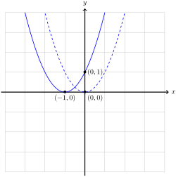
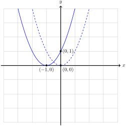
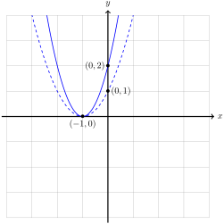
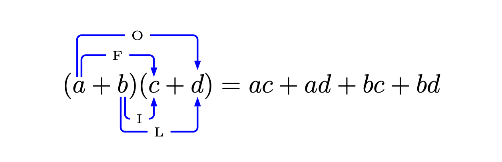

In this section, we study polynomial functions of degree 2. These polynomial functions are often called quadratic functions.
Definition3.5.1.Quadratic Function.
A function \(f \colon \R \to \R\) is quadratic if it has the form
\begin{equation*}
f(x) = ax^2 + bx + c
\quad\text{or}\quad
y = ax^2 + bx + c,
\end{equation*}
where \(a\text{,}\)\(b\text{,}\) and \(c\) are numbers, and \(a \neq 0\text{.}\)
Subsection3.5.1Vertex Form
Just as with lines, quadratic functions are easier to understand through visualizations. The simplest quadratic function to understand is \(y = x^2\text{.}\) We call the the graph of \(y = x^2\) a parabola. The point \((0,0)\) is called the vertex.
As we have already seen in Section 2.5, the graph of this function is symmetric about the \(y\)-axis, which is the vertical line \(x = 0\) through the vertex. While general quadratics are slightly more complicated, we can use the properties of \(y = x^2\) to graph the class of quadratics in the following form.
Definition3.5.2.The Vertex Form of a Quadratic.
A quadratic function, \(f(x)\text{,}\) is in vertex form if there are numbers \(h\) and \(k\) such that
\begin{equation*}
f(x) = a(x - h)^2 + k.
\end{equation*}
Using the methods of Section 2.4, we can graph quadratics in this form by following the steps below.
Algorithm3.5.3.Graphing Quadratic Functions in Vertex Form.
To graph of the quadratic function \(y = a(x - h)^2 + k\)
Translate the graph of \(y = x^2\) horizontally by \(h\) units.
If \(0 \lt h\text{,}\) then the translation is to the right.
If \(h \lt 0\text{,}\) then the translation is to the left.
Scale the graph of \((x - h)^2\) by \(\abs{a}\text{.}\)
If \(1 \lt a\text{,}\) then the graph is stretched.
If \(a \lt 1\text{,}\) then the graph is compressed.
If \(a \lt 1\text{,}\) reflect the graph of \(\abs{a}(x - h)^2\) over the \(x\)-axis.
Translate the graph of \(a(x - h)^2\) vertically by \(k\) units.
If \(k \lt 0\text{,}\) then the translation is down.
If \(0 \lt k\text{,}\) then the translation is up.
Example3.5.4.
Graph the function \(f(x) = -2(x+1)^2 + 1\text{.}\)
Solution.
Following Algorithm 3.5.3, we perform the following operations on the graph of the function \(y = x^2\text{.}\)
Translate the graph of \(y = x^2\) to the left by 1 to obtain the graph of \(y = (x + 1)^2\text{.}\)
Stretch the graph of \(y = (x + 1)^2\) by a factor of 2 to obtain the graph of \(y = 2(x + 1)^2\text{.}\)
Reflect the graph of \(y = 2(x + 1)^2\) across the \(x\)-axis to obtain the graph of \(y = -2(x + 1)^2\text{.}\)
Translate the graph of \(y = -2(x + 1)^2\) up by 1 to obtain the graph of \(y = -2(x+1)^2 + 1\text{.}\)
These operations are shown below.



Figure3.5.5.The transformations used to graph \(y = -2(x + 1)^2 + 1\text{.}\)
If we follow the vertex, we can see the first operation moves the point \((0,0)\) to \((h,0)\text{.}\) Since the point \((h,0)\) lies on the \(x\)-axis, the second and third operation do not move the point \((h,0)\text{.}\) The fourth operation moves the point \((h,0)\) to the point \((h,k)\text{.}\) Since these operations preserve the general shape of the graph, a quadratic function in the form
\begin{equation*}
y = a(x - h)^2 + k
\end{equation*}
is a parabola with vertex at \((h,k)\text{.}\) Hence the reason for the name vertex form.
Similarly, if we follow the line of symmetry for \(y = x^2\text{,}\) then we can see the first operation moves the vertical line \(x = 0\) to the vertical line \(x = h\text{.}\) The following three operations do not change the vertical line, so the graph of \(y = a(x - h)^2 + k\) is symmetric about the vertical line \(x = h\text{.}\)
Finally, we observe the third operation may change the direction in which the parabola opens.
Definition3.5.6.
The graph of a parabola is
concave up if the parabola opens upwards like \(y=x^2\text{.}\)
concave down if the parabola opens downwards like \(y = -x^2\text{.}\)
For quadratics in vertex form \(f(x) = a(x - h)^2 + k\text{,}\) we can see that \(f\) is concave up whenever \(0 \lt a\) and concave down whenever \(a \lt 0\text{.}\)
Subsection3.5.2Completing the Square
Surprisingly, every quadratic function can be placed into vertex form. Paired with the observations above, this tells us the graph of every quadratic function is a parabola. Placing a general quadratic function into vertex form will require the method of completing the square.
Remember that when we multiply two binomials, we must distribute. We can remember how to distribute using the mnemonic FOIL: First, Outer, Inner, Last:

Figure3.5.7.Multiplying binomials using the FOIL method.
If we use this method to multiply a binomial by itself, then we find the useful formula
In order to accurately graph a quadratic function \(y = f(x) = ax^2 + bx + c\text{,}\) it is necessary to identify the \(x\)-intercepts for the function. A point \((x,0)\) in the Cartesian plane is an \(x\)-intercept for this function if
\begin{equation*}
0 = ax^2 + bx + c.
\end{equation*}
This reduces the geometric problem of finding the \(x\)-intercepts of a quadratic to the algebraic problem finding solutions to equations.
Definition3.5.13.
An equation of the form \(ax^2 + bx + c = 0\) is called a quadratic equation
To find the solutions to the quadratic equation \(ax^2 + bx + c\text{,}\) we use The Vertex Form of a Quadratic to write
\begin{align*}
\amp a\left(x + \frac{b}{2a}\right)^2 - \frac{b^2 - 4ac}{4a} = 0 \amp\amp \text{Add}\ \frac{b^2 - 4ac}{4a}\ \text{to both sides}\\
\amp a\left(x + \frac{b}{2a}\right)^2 = \frac{b^2 - 4ac}{4a} \amp\amp \text{Divide both sides by}\ a\\
\amp \left(x + \frac{b}{2a}\right)^2 = \frac{b^2 - 4ac}{4a^2} \amp\amp \text{Take the square root of both sides}\\
\amp x + \frac{b}{2a} = \pm\sqrt{\frac{b^2 - 4ac}{4a^2}} \amp\amp \text{Simplify}\\
\amp x + \frac{b}{2a} = \pm\frac{\sqrt{b^2 - 4ac}}{\sqrt{4a^2}} \amp\amp \text{Simplify}\\
\amp x + \frac{b}{2a} = \frac{\sqrt{b^2 - 4ac}}{2a} \amp\amp \text{Subtract}\ \frac{b}{2a}\ \text{from both sides}\\
\amp x = - \frac{b}{2a} + \frac{\sqrt{b^2 - 4ac}}{2a} \amp\amp \text{Simplify}\\
\amp x = \frac{-b \pm \sqrt{b^2 - 4ac}}{2a} \amp\amp \text{Simplify}
\end{align*}
It is important to note that
\begin{equation*}
x = \frac{-b + \sqrt{b^2 - 4ac}}{2a}
\quad\text{and}\quad
x = \frac{-b - \sqrt{b^2 - 4ac}}{2a}
\end{equation*}
are real numbers only when \(b^2 - 4ac\) is a non-negative number. The number \(b^2 - 4ac\) is an important invariant of a quadratic function.
Definition3.5.14.The Discriminant.
The discriminant of the quadratic function \(f(x) = ax^2 + bx + c\) is the number
\begin{equation*}
D = b^2 - 4ac
\end{equation*}
The discriminant provides both algebraic and geometric information about quadratic functions. On the algebraic side, the discriminant tells us how many solutions there are to the quadratic equation \(ax^2 + bx +c = 0\text{.}\)
Formula3.5.15.The Quadratic Formula.
The quadratic equation
\begin{equation*}
ax + bx + c = 0
\end{equation*}
has either two, one, or zero real solutions, depending on The Discriminant, \(D = b^2 - 4ac\text{.}\)
If \(D > 0\text{,}\) then the two solutions are
\begin{equation*}
x = \frac{-b + \sqrt{D}}{2a}
\quad\text{and}\quad
x = \frac{-b - \sqrt{D}}{2a}.
\end{equation*}
If \(D = 0\text{,}\) then the only solution is
\begin{equation*}
x = \frac{-b + \sqrt{D}}{2a} = \frac{-b}{2a}.
\end{equation*}
If \(D \lt 0\text{,}\) then there are no real solutions.
On the geometric side, the discriminant tells us how many \(x\)-intercepts the graph of \(y = ax^2 + bx + c\) has.
Theorem3.5.18.The \(x\)-intercepts of a Quadratic Function.
The quadratic function \(y = ax^2 + bx + c\) has either two, one, or zero \(x\)-intercepts, depending on the The Discriminant, \(D = b^2 - 4ac\text{.}\)
If \(D > 0\text{,}\) then there are two \(x\)-intercepts,